Not a completed causal map or validated steering operator. Raw data: JSON · CSV.
Follow-up evidence: five-start short-fork replication, edited-state support proxies, location/time controls, and frozen nonlinear interface readouts on 75 validation trajectories. No validated steering operator; confirmation trajectories remain unopened.
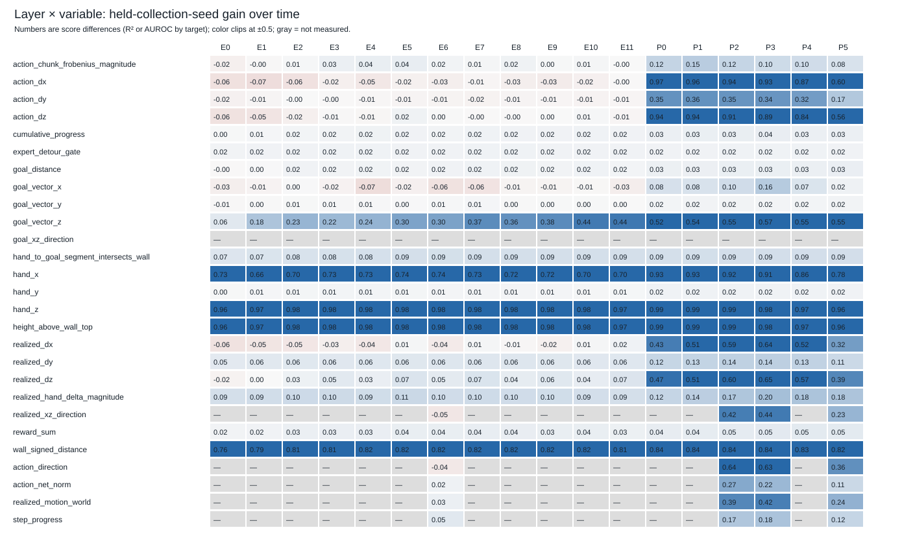
Evidence: geometry_map.json rows[].linear_score

Evidence: geometry_map.json rows[].spatial_decodability
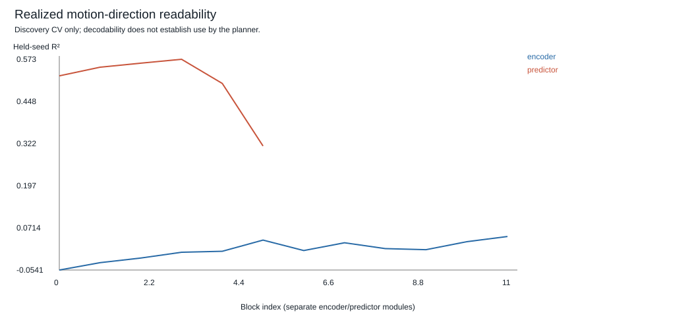
Evidence: geometry_map.json realized_xz_direction rows[].direction_magnitude_curve; original consistently masked report
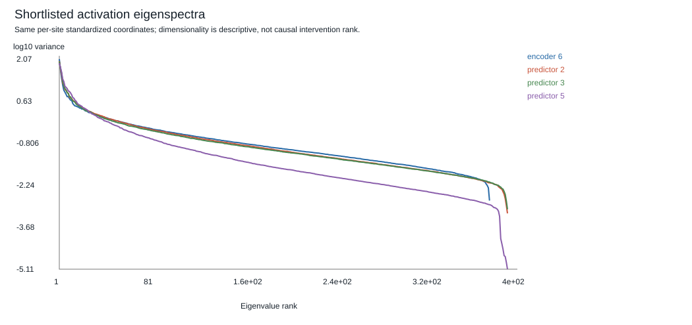
Evidence: geometry_map.json sites.*.eigenspectrum

Evidence: geometry_map.json sites.encoder.block6.pca_trajectories
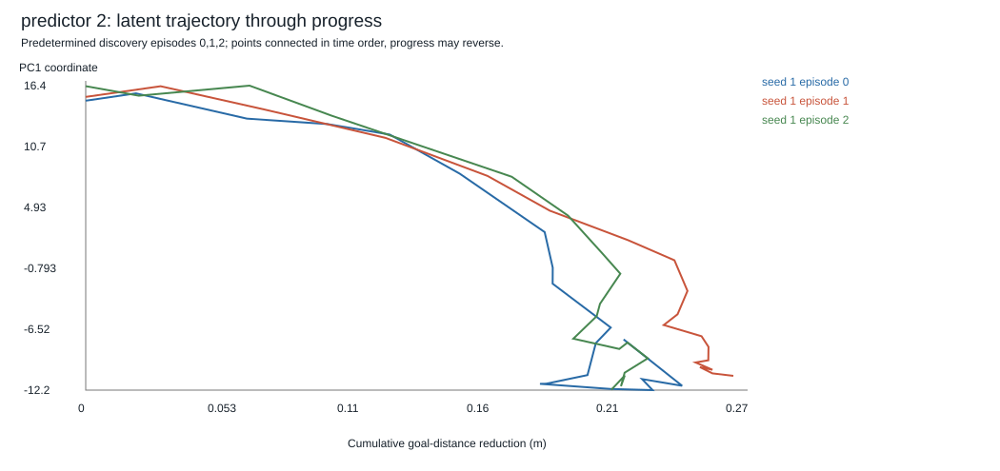
Evidence: geometry_map.json sites.predictor.block2.pca_trajectories
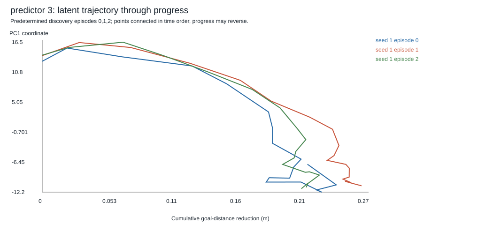
Evidence: geometry_map.json sites.predictor.block3.pca_trajectories

Evidence: geometry_map.json sites.predictor.block5.pca_trajectories
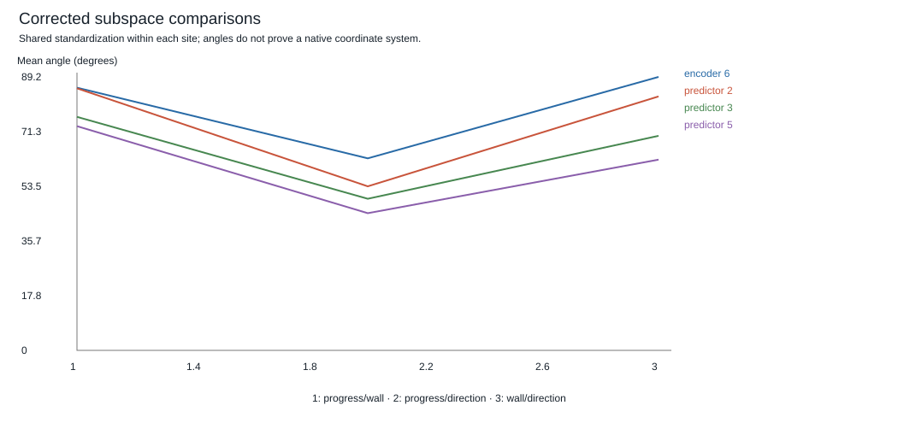
Evidence: geometry_map.json sites.*.subspace_comparisons
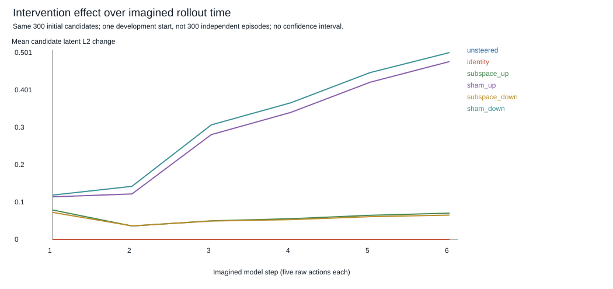
Evidence: geometry_map.json causal_measurements.timelines[].latent_l2_change_mean_per_candidate
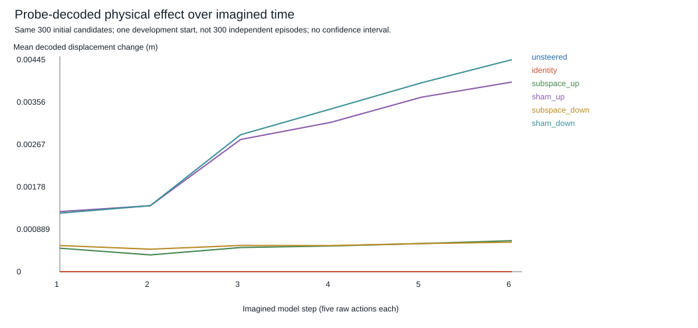
Evidence: geometry_map.json causal_measurements.timelines[].decoded_displacement_change_mean_norm
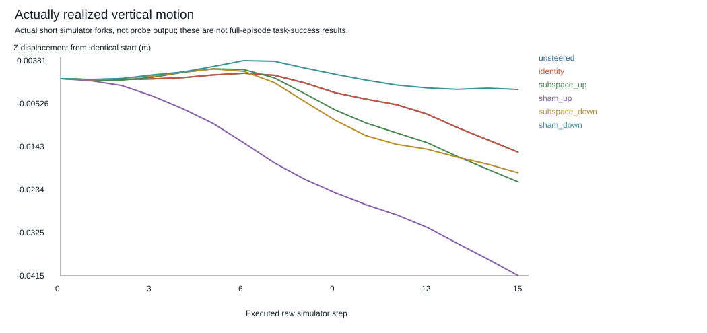
Evidence: geometry_map.json causal_measurements.rows[].realized.displacement_xyz

Evidence: followups.replication.combined_directions_semantic_minus_sham
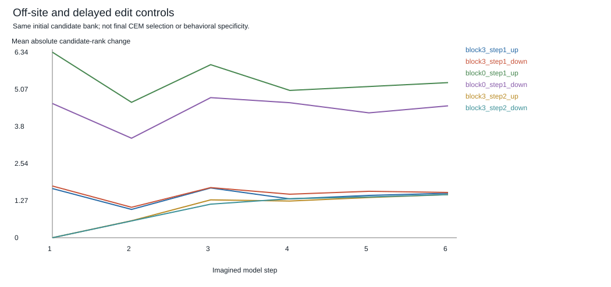
Evidence: followups.specificity.rows

Evidence: followups.nonlinear_interfaces.rows[].held_validation
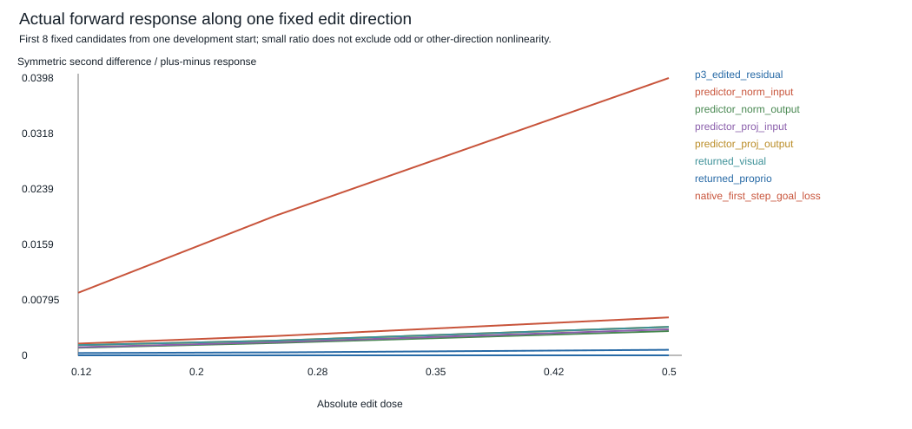
Evidence: followups.interface_response.rows